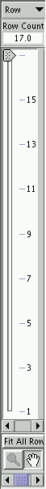
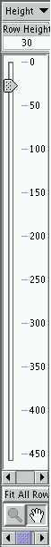

The concealable right panel in Timeline window contains the row adjustment panel which is used to determine the row adjustment scheme. There are 2 different modes in row adjustment panel: row count mode and row height mode. These 2 modes can be selected by the pulldown menu at the top of the panel. The row count mode attempts to keep the number of timelines constant as indicated in the Row Count text field when the Timeline window resizes. On the other hand, the row height mode fixes the height of each timeline as indicated by the Row Height text field. Currently, the height of the timeline can be adjusted up to the height of the timeline canvas, in that case the Row Count text field shows a number 13.6. The maximum number of timelines that can be displayed is set to the total number of rows represented by the whole Y-axis label tree3.7. For multiple viewmaps slog2 file, the Y-axis label tree can be expanded or collapsed. This could change the maximum number of rows in the row count slider after user hits the CanvasReDraw button. Coupling with window resize, the row adjustment panel allows user to magnify or shrink the height of the timeline as one desires.
|
[Row Count mode] [Row Height mode]
|